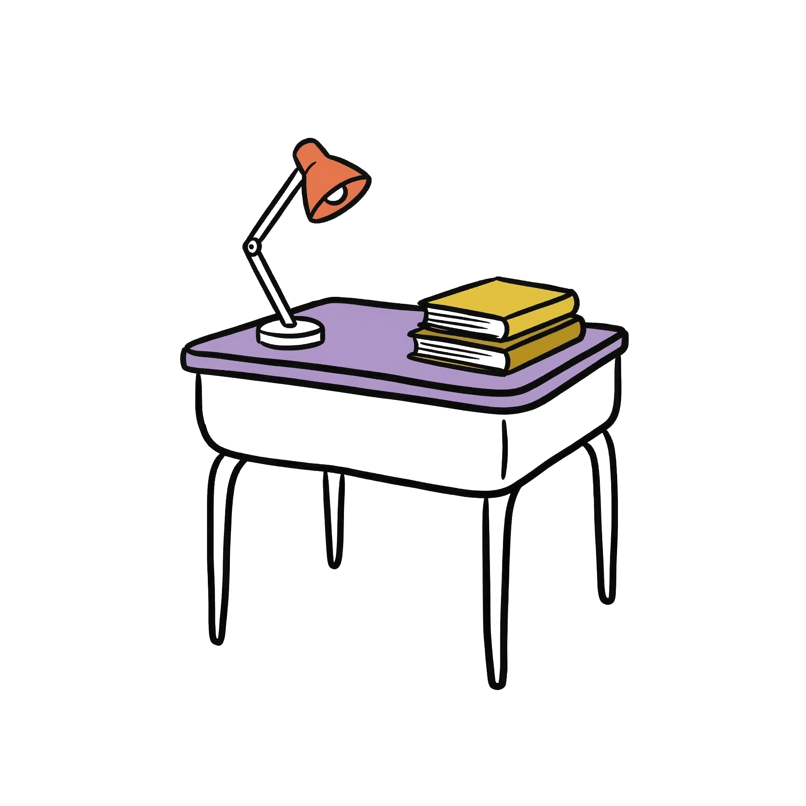

Was passiert, wenn du ein Standard-Arbeitsblatt zum Thema Lehrvertrag in die KI-Werkstatt gibst? Dieses Beispiel zeigt den kompletten Workflow: Quelle rein, 3 Niveaus raus, mit Scaffolding für DaZ-Lernende.

Der Lehrvertrag bildet die rechtliche Grundlage des Lehrverhältnisses. Er wird im Obligationenrecht (OR Art. 344 bis 346a) geregelt. Der Vertrag muss schriftlich vorliegen und von der kantonalen Behörde genehmigt werden. Die Probezeit dauert ein bis drei Monate und kann auf maximal sechs Monate verlängert werden. Während der Probezeit beträgt die Kündigungsfrist sieben Tage. Jugendliche bis 18 Jahre dürfen maximal neun Stunden pro Tag arbeiten.
nRLP-Bezug: Aspekt Recht (5.2.6) · Schlüsselkompetenz 3.2.1 (Quellenkritik) · Differenzierung nach Sprachniveau (7.3)
Ziel: Du verstehst die wichtigsten Punkte in deinem Lehrvertrag und kannst sie in eigenen Worten erklären.
A1 Lies den Text über den Lehrvertrag. Markiere 5 Wörter, die du nicht verstehst. Schlage sie nach oder frage deine Lehrperson.
A2 Was bedeutet «Probezeit»? Schreibe die Antwort in eigenen Worten (2–3 Sätze).
Beginne so: «Die Probezeit ist eine Zeit, in der ...»
A3 Richtig oder falsch? Kreuze an und korrigiere die falschen Aussagen.
☐ Der Lehrvertrag muss mündlich abgeschlossen werden.
☐ Die Probezeit dauert mindestens 1 Monat.
☐ Jugendliche dürfen 12 Stunden pro Tag arbeiten.
☐ Die Kündigungsfrist in der Probezeit beträgt 7 Tage.
Ziel: Du kannst Rechte und Pflichten aus dem Lehrvertrag auf konkrete Situationen anwenden und mit dem Gesetzestext begründen.
B1 Fallbeispiel: Lena (17) ist seit 6 Wochen in der Lehre als Detailhandelsfachfrau EBA. Sie ist unzufrieden und will kündigen. Welche Frist gilt? Begründe mit dem Gesetzestext (OR 346).
B2 Lenas Chef verlangt, dass sie am Samstag von 7 bis 19 Uhr arbeitet (12 Stunden). Darf er das? Begründe mit dem passenden Artikel und formuliere, was Lena ihrem Chef antworten könnte.
B3 Erstelle eine Übersichtstabelle mit 3 Spalten: Thema | Regel | Gesetzliche Grundlage. Trage mindestens 4 wichtige Punkte aus dem Lehrvertragsrecht ein.
Ziel: Du kannst den Lehrvertrag mit anderen Vertragsformen vergleichen, Schutzbestimmungen beurteilen und eine eigene Position begründen.
C1 Vergleich: Lies OR Art. 344–346a (Lehrvertrag) und OR Art. 319–362 (Einzelarbeitsvertrag). Wo schützt das Gesetz Lernende stärker als «normale» Arbeitnehmende? Nenne mindestens 3 Unterschiede.
C2 Diskussionsfrage: Die maximale Probezeit für Lernende ist 6 Monate. Für Arbeitnehmende 3 Monate. Ist das fair? Schreibe einen argumentativen Text (150–200 Wörter), in dem du deine Position begründest.
Tipp: Berücksichtige die Perspektiven von Lernenden UND Lehrbetrieben.
C3 KI-Kritik: Gib den Text von berufsbildung.ch in ein KI-Tool ein und lass dir eine Zusammenfassung erstellen. Prüfe: Stimmt alles? Wo vereinfacht die KI zu stark? Wo fehlen wichtige Nuancen?
Bezug: Schlüsselkompetenz 3.2.1 — Zwischen relevanten und irrelevanten Quellen unterscheiden, inklusive KI-Anwendungen.
NotebookLM generiert aus derselben Quelle verschiedene Zugänge. Die LP wählt, was zur Klasse passt.
Die wichtigsten Punkte des Lehrvertrags auf einer halben Seite. Für den Einstieg oder als Repetition.
10 Verständnisfragen mit Antworten. Zum Selbsttest oder als Lernkontrolle einsetzbar.
Fachbegriffe (Probezeit, Kündigungsfrist, Naturallohn, ...) einfach erklärt. Für DaZ-Lernende.
NotebookLM erstellt einen gesprochenen Überblick. Lernende hören den Stoff unterwegs.
5 realistische Fälle rund um den Lehrvertrag. Für Gruppenarbeit oder Prüfungsvorbereitung.
«Mein Lehrvertrag — worauf muss ich achten?» Zum Abhaken für Lernende vor der Unterschrift.
Mit deinem Material. Für deine Klasse. In 2 × 90 Minuten.
Pilot anfragen